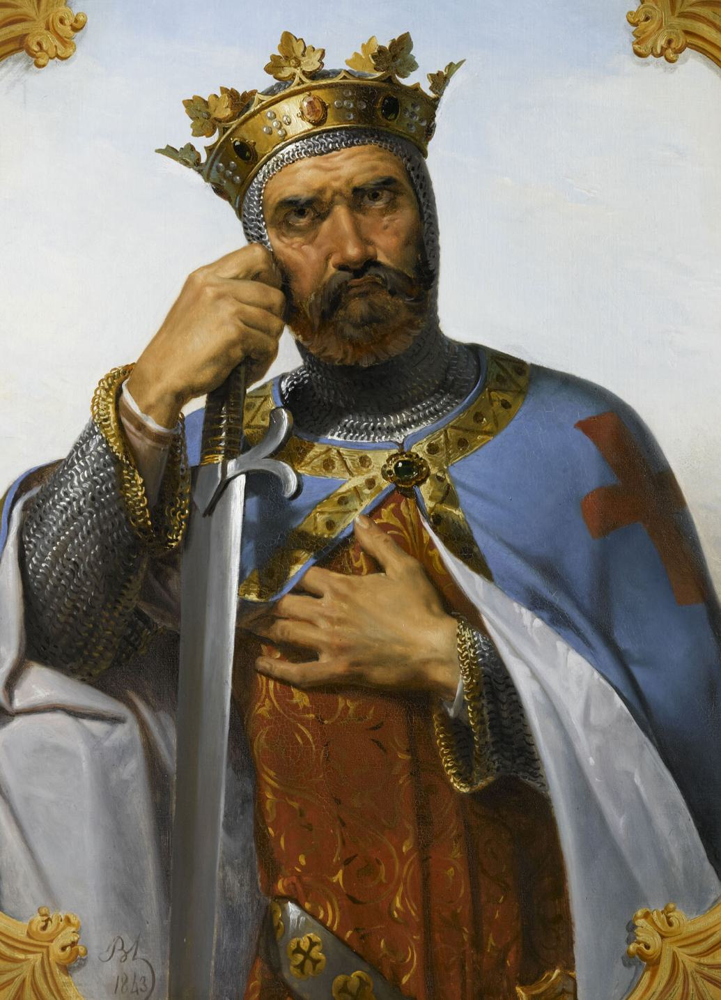

“Life is sweetest near the bone”

Essays · Poems · Fiction
Intuition. How hideously has the truth of it been bastardised to ‘instinct’ and animalism, a mechanism of ‘evolution’, cold, cruel and calculating. Intuition is the warmth of a man, that which paints the rays of a sun, photons beamed from outer space, into yellows, oranges, dandelion and chrysanthemum.